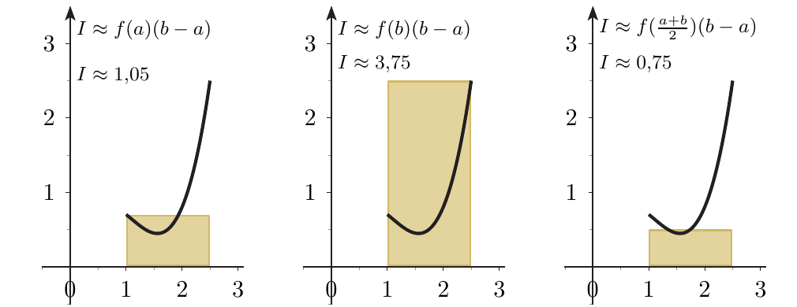
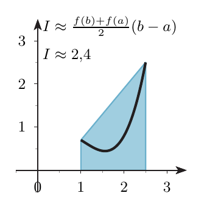
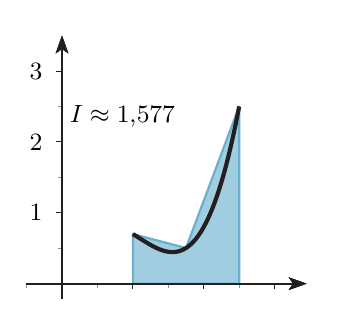
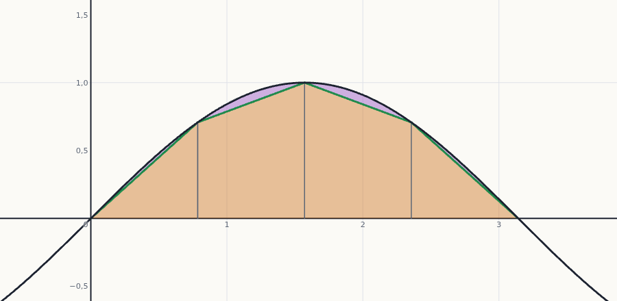
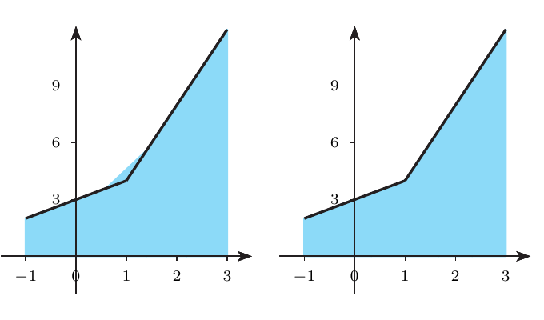
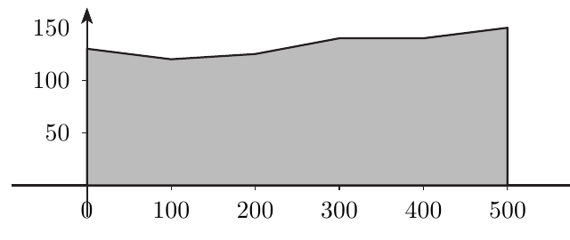

Integración numérica
Cuando no hay primitiva a mano, o solo se conocen unos cuantos valores medidos, la integral se aproxima cambiando la curva por piezas sencillas cuya área sí sabemos calcular: rectángulos, trapecios o parábolas. Aprenderás las tres fórmulas, a aplicarlas con una tabla de datos y a decidir cuántos subintervalos hacen falta para garantizar una precisión.
0Antes de empezar U p.263
Imagina que debes medir el área de una finca con un lado curvo. No sabes una fórmula para la curva, pero sí medir su altura en varios puntos. Lo natural es sustituir la parte curva por piezas sencillas (rectángulos, trapecios o arcos de parábola), calcular el área de las piezas y sumarla. Eso es integrar numéricamente: cuantas más piezas y mejor ajustadas, menos error.
U pp.263-264Qué necesitas saber ya
- La integral como área y la aditividad $\int_a^bf=\int_a^cf+\int_c^bf$ (tema 6.1).
- Regla de Barrow (tema 6.2) y técnicas de primitivas (tema 6.3): para comparar con el valor exacto.
- Extremos absolutos de una función continua en un intervalo cerrado (tema 3.4): hace falta para acotar $\lvert f''\rvert$ y $\lvert f^{(4)}\rvert$ en las cotas del error.
- Polinomio interpolador (tema 3.3): aparece en varios problemas de examen.
Mapa del tema
| Apartado | Qué contiene | Dónde está |
|---|---|---|
| 1 Para qué y cómo | cuándo se necesita; idea común a todas las fórmulas; E 6.36 | U pp.263-264 |
| 2 Rectángulos | Def. 6.3 y 6.4; Ej. 6.29, 6.30 | U pp.264-266 |
| 3 Trapecio | Def. 6.5 y 6.6; Ej. 6.31, 6.32 | U pp.266-267 |
| 4 Simpson | Def. 6.7 y 6.8; nodos y subintervalos; Ej. 6.33 | U pp.267-269 |
| 5 Los tres métodos a la vez | interactivo; cómo baja el error al doblar $n$ | propio |
| 6 Cuánto se equivoca | Teor. 6.3 y 6.4; Ej. 6.34, 6.35; receta de $m$ | U pp.269-270 |
| 7 Ejercicios de E | E 6.36–6.41 | E pp.242-246 |
| 8 Ejemplos propios | 4 ejemplos, de fácil a difícil | propio |
| 9 Así lo preguntan en el examen | 10 problemas de X | X |
| 10 Chuleta y comprobación | fórmulas, errores frecuentes, lista | — |
Qué se pide en los ejercicios y en el examen
- Aplicar el trapecio (simple o compuesto) y Simpson (simple o compuesta) a una función dada o a una tabla de valores. Es lo que más aparece en X.
- Comparar con el valor exacto y explicar por qué una fórmula se acerca más que otra (rectas frente a parábolas).
- Contar bien: nodos, subintervalos y cuál es la $h$ de cada fórmula.
- Cotas de error y «¿cuántos subintervalos hacen falta?» (U Ej. 6.34 y 6.35). En X no hay preguntas de cota, pero es materia del libro oficial.
1Para qué sirve y cómo se piensa U pp.263-264
La regla de Barrow necesita una primitiva de $f$. Pero en muchos casos no es posible calcularla (por ejemplo $\int e^{-x^2}dx$ no se expresa con funciones elementales), o bien solo conocemos los valores de $f$ en ciertos puntos del intervalo $[a,b]$ (mediciones). En esos casos se aproxima el valor de la integral.
U p.263Se apoyan en dos propiedades que ya conoces: (1) la integral $\int_a^bf$ es el área entre la gráfica, el eje $x$ y las rectas $x=a$, $x=b$; (2) la integral se puede trocear: $\int_a^bf=\int_a^cf+\int_c^bf$. El plan es siempre el mismo:
- Sustituir $f$ por una función sencilla construida con valores de $f$ en ciertos puntos (los nodos): un escalón (rectángulo), una recta (trapecio) o una parábola (Simpson).
- Calcular el área de esa función sencilla, que es fácil.
- Si la aproximación es mala, dividir $[a,b]$ en subintervalos, aplicar la fórmula en cada uno y sumar (fórmulas compuestas).
Analogía: cubrir un jardín de forma curva con baldosas. Con una baldosa grande sobra y falta mucho; con muchas baldosas pequeñas el borde queda casi bien. Y si las baldosas tienen forma de trapecio o de «arco», se ajustan mejor al borde que si son rectangulares.
U p.264 S p.507Creer que la integración numérica solo sirve cuando «no conocemos la fórmula» de $f$. También se usa cuando se conoce $f$ pero su primitiva es imposible o muy larga (E 6.36, más abajo).
2Fórmulas de los rectángulos U pp.264-266
La aproximación más burda: sustituir la curva por un escalón, un rectángulo de base $b-a$. ¿A qué altura? Se puede tomar la altura del extremo izquierdo, la del derecho o la del punto medio.
$$\begin{aligned}\int_a^bf(x)\,dx&\approx f(a)(b-a) &&(\text{izquierdo}),\\ \int_a^bf(x)\,dx&\approx f(b)(b-a) &&(\text{derecho}),\\ \int_a^bf(x)\,dx&\approx f\!\Big(\frac{a+b}2\Big)(b-a) &&(\text{central o punto medio}).\end{aligned}$$
U p.264Aproximar $I=\displaystyle\int_1^{5/2}f(x)\,dx$ con $f(x)=x^3-3{,}3x^2+3x$ (su valor exacto es $I=\frac{417}{320}=1{,}303125$, por Barrow).
- Valores necesarios: $f(1)=0{,}7$, $f(2{,}5)=2{,}5$, $f(1{,}75)=0{,}503125$; la base es $b-a=1{,}5$.
- Izquierdo: $0{,}7\cdot1{,}5=1{,}05$. Derecho: $2{,}5\cdot1{,}5=3{,}75$. Central: $0{,}503125\cdot1{,}5=0{,}7546875\approx0{,}75$.
- Lectura: los tres se equivocan mucho (el exacto es $1{,}30$): un único rectángulo no sigue la curva.

Se divide $[a,b]$ en $n$ subintervalos iguales de longitud $h=\frac{b-a}n$, con nodos $x_k=a+kh$, $k=0,1,\dots,n$. Entonces $$\begin{aligned}\int_a^bf&\approx\frac{b-a}n\sum_{k=0}^{n-1}f(x_k) &&(\text{izq.}),\\ \int_a^bf&\approx\frac{b-a}n\sum_{k=1}^{n}f(x_k) &&(\text{der.}),\\ \int_a^bf&\approx\frac{b-a}n\sum_{k=0}^{n-1}f\!\Big(\frac{x_k+x_{k+1}}2\Big) &&(\text{central}).\end{aligned}$$
U p.266- Contar: $n=3$, $h=\frac{2{,}5-1}3=0{,}5$, nodos $1;\,1{,}5;\,2;\,2{,}5$.
- Izquierdo (nodos $x_0,x_1,x_2$): $0{,}5\,(f(1)+f(1{,}5)+f(2))=0{,}975$.
- Derecho (nodos $x_1,x_2,x_3$): $0{,}5\,(f(1{,}5)+f(2)+f(2{,}5))=1{,}875$.
- Central (puntos medios $1{,}25;\,1{,}75;\,2{,}25$): $0{,}5\,(f(1{,}25)+f(1{,}75)+f(2{,}25))=1{,}2421875\approx1{,}242$.
El central es el que mejor se acerca al exacto $1{,}303$: el «error por exceso» y el «error por defecto» dentro de cada rectángulo se compensan en parte.
U p.266En el rectángulo derecho compuesto, empezar la suma en $f(x_0)$ (eso es el izquierdo): el derecho suma $f(x_1),\dots,f(x_n)$.
3Fórmula del trapecio U pp.266-267
En lugar de un escalón, tendemos una cuerda recta entre los puntos $(a,f(a))$ y $(b,f(b))$ de la gráfica, como una valla recta cerrando una finca de lado curvo. La región bajo esa cuerda es un trapecio «acostado» de altura $b-a$ y bases $f(a)$, $f(b)$. Su área es la media de las dos bases por la altura.
S p.508 L §4.6 p.306$$\int_a^bf(x)\,dx\approx\frac{f(b)+f(a)}2\,(b-a).$$
U p.267Con la misma $f$ del Ej. 6.29: $I\approx\dfrac{f(1)+f(2{,}5)}2\cdot1{,}5=\dfrac{0{,}7+2{,}5}2\cdot1{,}5=2{,}4$. La cuerda queda por encima de la curva (que baja y luego sube), así que sobra área.
U p.267
Se divide $[a,b]$ en $n$ subintervalos iguales, $h=\frac{b-a}n$, $x_k=a+kh$, $f_k=f(x_k)$, $k=0,\dots,n$, y se aplica el trapecio en cada uno: $$\int_a^bf(x)\,dx\approx\frac h2\big(f_0+2f_1+2f_2+\dots+2f_{n-1}+f_n\big).$$ Regla para recordarla: $I\approx\dfrac h2\,(\text{Extremos}+2\cdot\text{Centrales})$. $n$ subintervalos = $n+1$ nodos.
U p.267Cada nodo interior es el borde derecho de un trapecio y el borde izquierdo del siguiente: su altura se usa dos veces. Los extremos solo pertenecen a un trapecio.
- Contar: $n=2$, $h=\frac{1{,}5}2=0{,}75$, nodos $1;\,1{,}75;\,2{,}5$.
- Clasificar: extremos $f(1)=0{,}7$ y $f(2{,}5)=2{,}5$; central $f(1{,}75)=0{,}503125$.
- Fórmula: $\dfrac{0{,}75}2\big(0{,}7+2\cdot0{,}503125+2{,}5\big)=\dfrac{2019}{1280}\approx1{,}577$.
Con dos trapecios el error baja de $1{,}10$ (trapecio simple) a $0{,}27$.
U p.267
Olvidar el $2$ delante de los valores centrales (en el Ej. 6.32 saldría $1{,}39$). Otra confusión: tomar $h$ como el ancho total $b-a$ en vez de $\frac{b-a}n$.
Si el enunciado da una tabla de $N$ valores igualmente espaciados, el trapecio compuesto usa todos: son $N-1$ subintervalos y $h$ es la separación entre datos (esto vale solo con datos igualmente espaciados; si no lo están, trapecio simple en cada tramo y sumar: X10).
4Fórmula de Simpson U pp.267-269
Una recta solo puede imitar una curva sin curvatura. Una parábola sí puede «doblarse». Simpson toma tres puntos de la gráfica (los dos extremos y el punto medio), pasa por ellos la parábola (única) y calcula su área. Es como sustituir la valla recta del trapecio por un perfil de arco, que se pega mucho mejor a una orilla curva.
S p.512$$\int_a^bf(x)\,dx\approx\frac{f(a)+4f\!\big(\frac{a+b}2\big)+f(b)}6\,(b-a).$$ Usa 3 nodos igualmente espaciados: los extremos y el punto medio. Los pesos son $1,4,1$ (de suma $6$).
De dónde salen los pesos $1,4,1$: son los únicos que hacen la fórmula exacta para $1$, $x$ y $x^2$. Por ejemplo, en $[0,1]$ con $f(x)=x^2$: $\frac{0+4\cdot\frac14+1}6=\frac13=\int_0^1x^2dx$.
U p.268Se divide $[a,b]$ en $n$ subintervalos iguales de longitud $h=\frac{b-a}n$ y a cada uno se le aplica la fórmula de Simpson. Los nodos son los extremos y el punto medio de cada subintervalo: $x_k=a+k\frac h2$, $k=0,1,\dots,2n$. Con $f_k=f(x_k)$, $$\int_a^bf(x)\,dx\approx\frac h6\big(f_0+4f_1+2f_2+4f_3+\dots+2f_{2n-2}+4f_{2n-1}+f_{2n}\big).$$ Regla: $I\approx\dfrac h6\,(\text{Extremos}+2\cdot\text{Pares}+4\cdot\text{Impares})$. $n$ subintervalos = $2n+1$ nodos (siempre un número impar de nodos); los nodos impares son los puntos medios de los subintervalos.
U p.268En la compuesta, la $h$ de la fórmula es la longitud de cada subintervalo $\frac{b-a}n$, no la distancia entre nodos consecutivos (que es $\frac h2$). Si usas $\frac{h}2$ como factor, la fórmula equivalente es $\frac{h/2}3(E+2P+4I)$; si pones $\frac{h/2}6$ el resultado sale la mitad.
De una función se conoce la tabla
| $x$ | 1 | 1,1 | 1,2 | 1,3 | 1,4 | 1,5 | 1,6 |
|---|---|---|---|---|---|---|---|
| $f(x)$ | 2 | 2,2 | 2,3 | 2,1 | 2,4 | 2,3 | 1,9 |
Aproximar $I=\int_1^{1{,}6}f(x)\,dx$ con Simpson y con Simpson compuesta en tres subintervalos.
- Simpson simple: $b-a=0{,}6$ y el punto medio es $1{,}3$ (está en la tabla): $\dfrac{f(1)+4f(1{,}3)+f(1{,}6)}6\cdot0{,}6=\dfrac{2+8{,}4+1{,}9}6\cdot0{,}6=1{,}23$.
- Contar para la compuesta: $n=3\Rightarrow h=\frac{1{,}6-1}3=0{,}2$; subintervalos $[1;1{,}2]$, $[1{,}2;1{,}4]$, $[1{,}4;1{,}6]$ con puntos medios $1{,}1;\,1{,}3;\,1{,}5$. Hay $2\cdot3+1=7$ nodos, justo los de la tabla.
- Clasificar: extremos $f_0=2$, $f_6=1{,}9$ (suman $3{,}9$); pares (fronteras interiores) $f_2=2{,}3$, $f_4=2{,}4$ (suman $4{,}7$); impares (puntos medios) $f_1=2{,}2$, $f_3=2{,}1$, $f_5=2{,}3$ (suman $6{,}6$).
- Sustituir: $I\approx\dfrac{0{,}2}6\big(3{,}9+2\cdot4{,}7+4\cdot6{,}6\big)=\dfrac{0{,}2\cdot39{,}7}6\approx1{,}3233$.
El trapecio es exacto si $f$ es una recta; Simpson es exacto si $f$ es un polinomio de grado $\le3$ (no solo de grado $\le2$). Por ejemplo, con la cúbica $f$ del Ej. 6.29, Simpson simple da exactamente $\frac{1{,}5}6\big(0{,}7+4\cdot0{,}503125+2{,}5\big)=1{,}303125$. La razón se ve con las cotas del error (apartado 6) y se comprueba en el ejemplo propio 2.
propio5Los tres métodos a la vez propio
Prueba con el interactivo: elige una función y un método, y sube $n$. Observa (i) cómo la zona de error (color distinto) se estrecha, (ii) cómo el error baja mucho más deprisa con Simpson que con el trapecio, y (iii) que el trapecio y el punto medio se equivocan en sentidos opuestos.

Lo que debes ver (y recordar)
| $n$ | Trapecio $T_n$ | error | Punto medio $M_n$ | error | Simpson $S_n$ | error |
|---|---|---|---|---|---|---|
| 2 | $1{,}570796$ | $-4{,}29\cdot10^{-1}$ | $2{,}221441$ | $+2{,}21\cdot10^{-1}$ | $2{,}004560$ | $+4{,}56\cdot10^{-3}$ |
| 4 | $1{,}896119$ | $-1{,}04\cdot10^{-1}$ | $2{,}052344$ | $+5{,}23\cdot10^{-2}$ | $2{,}000269$ | $+2{,}69\cdot10^{-4}$ |
| 8 | $1{,}974232$ | $-2{,}58\cdot10^{-2}$ | $2{,}012909$ | $+1{,}29\cdot10^{-2}$ | $2{,}000017$ | $+1{,}66\cdot10^{-5}$ |
- Al doblar $n$, el error del trapecio y del punto medio se divide por $\approx4$ (decrece como $1/n^2$: el error es proporcional a $1/n^2$, igual que la cota del Teor. 6.3) y el de Simpson por $\approx16$ (el error es proporcional a $1/n^4$, como en el Teor. 6.4).
- El error del punto medio es aproximadamente la mitad y de signo contrario al del trapecio.
- Con los mismos $n$ subintervalos, $S_n=\dfrac{T_n+2M_n}3$ (comprobable: $\frac{1{,}570796+2\cdot2{,}221441}3=2{,}004560$). Simpson «mezcla» las dos aproximaciones para cancelar sus errores opuestos.
Valores calculados con sympy (15 cifras) con las fórmulas de U Def. 6.4, 6.6 y 6.8. La mitad del error del punto medio respecto al trapecio se refleja en las cotas $\frac{K(b-a)^3}{24n^2}$ frente a $\frac{K(b-a)^3}{12n^2}$ (Stewart).
propio S p.5106¿Cuánto nos equivocamos? Cotas del error U pp.269-270
Una aproximación sin una idea de su error vale poco. El error de una recta contra una curva depende de cuánto se curva la función: la curvatura la mide $f''$. Si $f''$ es pequeña, la curva casi es recta y el trapecio acierta; para Simpson, que ya copia parábolas, lo que cuenta es la cuarta derivada. Además, cuanto más pequeño $h$, menos error. Las cotas ponen todo eso en una fórmula.
Con el trapecio compuesto en $m$ subintervalos ($m$ = número de subintervalos, el mismo $n$ de las Def. 6.6 y 6.8), el error absoluto $\varepsilon$ al sustituir la integral por la aproximación cumple $$\varepsilon\le\frac{(b-a)^3}{12\,m^2}\,M_2,$$ donde $f$ es dos veces derivable y $\lvert f''(x)\rvert\le M_2$ para todo $x\in[a,b]$.
U p.269Con Simpson compuesta en $m$ subintervalos ($m$ = el mismo $n$ de la Def. 6.8), $$\varepsilon\le\frac{(b-a)^5}{2880\,m^4}\,M_4,$$ donde $f$ es cuatro veces derivable y $\lvert f^{(4)}(x)\rvert\le M_4$ para todo $x\in[a,b]$.
U p.270- Si $f''\equiv0$ (recta), $M_2=0$ y el trapecio es exacto. Si $f^{(4)}\equiv0$ (polinomio de grado $\le3$), $M_4=0$ y Simpson es exacto.
- Doblar $m$ divide la cota del trapecio entre $2^2=4$ y la de Simpson entre $2^4=16$ (justo lo que vimos en el interactivo).
- Son cotas (garantías), no el error real: el error real suele ser menor.
Cota del error con 10 y con 20 subintervalos.
- Derivadas: $f'(x)=-2xe^{-x^2}$ y $f''(x)=2e^{-x^2}(2x^2-1)$.
- Máximo de $\lvert f''\rvert$ en $[0,1]$ (extremos absolutos): candidatos $x=0$, $x=1$ y los ceros de $f'''(x)=4xe^{-x^2}(3-2x^2)$, que son $x=0$ y $x=\pm\sqrt{3/2}\approx\pm1{,}22$ (fuera de $[0,1]$). Valores: $\lvert f''(0)\rvert=2$, $\lvert f''(1)\rvert=2/e\approx0{,}74$. Luego $M_2=2$.
- Cotas: $\varepsilon_{10}\le\dfrac{1^3}{12\cdot10^2}\cdot2=\dfrac1{600}$ y $\varepsilon_{20}\le\dfrac{1^3}{12\cdot20^2}\cdot2=\dfrac1{2400}$.
Tomar $M_2=\lvert f''(1)\rvert$ (el extremo derecho) o el máximo de $f''$ sin valor absoluto: aquí $f''(0)=-2$ es negativo y es el que manda.
Sea $f$ cuatro veces derivable con $\lvert f^{(4)}(x)\rvert\le50$ en todo $\mathbb R$. ¿En cuántos subintervalos hay que dividir $[0,2]$ para tener la seguridad de que Simpson compuesta aproxima $\int_0^2f$ con error menor que $0{,}0001$?
- Imponer la cota del Teor. 6.4: $\dfrac{(2-0)^5}{2880\,m^4}\cdot50\le0{,}0001$.
- Despejar (todo es positivo): $m^4\ge\dfrac{2^5\cdot50}{2880\cdot0{,}0001}=\dfrac{2^5\cdot50}{0{,}288}\approx5555{,}6$, y la raíz cuarta (creciente) da $m\ge8{,}6334$.
- Redondear hacia arriba: $m=9$ subintervalos (es decir, $2\cdot9+1=19$ nodos).
Redondear $8{,}63$ a $8$ (no garantiza la precisión) o contestar «9 nodos»: son $9$ subintervalos y $19$ nodos.
7Ejercicios del libro, resueltos E pp.242-246
Los seis ejercicios de E de esta sección, con su numeración. Haz clic en cada uno (o en «Mostrar soluciones») para ver la solución.
Ejercicio 6.36 · ¿Solo es útil si no se conoce $f$? E p.242
¿La integración numérica solamente es útil si no conocemos la expresión explícita de la función a integrar?
- Qué me piden
- Una respuesta razonada (sí o no).
- Cómo lo pienso
- Barrow necesita una primitiva; conocer $f$ no garantiza tenerla.
- Qué uso
- Motivación de U §6.4.1 (p.263).
- Por dónde empiezo
- Buscar una función conocida sin primitiva elemental.
- No. Hay funciones con fórmula sencilla cuya primitiva no se escribe con funciones elementales, como $e^{-x^2}$ (U Ej. 6.34), $\frac{\operatorname{sen}x}{x}$ o $e^{x^3}$: Barrow no sirve en la práctica.
- Otras veces la primitiva existe pero es larguísima de obtener (racionales con muchos factores) y una aproximación basta.
- Y, por supuesto, también es útil cuando solo se conoce una tabla de valores (mediciones).
Creer que «tener la fórmula» equivale a «saber integrarla».
Ejercicio 6.37 · ¿Trapecio o Simpson con dos datos? E pp.242-243
De una función $f$ se conocen los valores $f(0)=42$, $f(3)=41$. ¿Es posible utilizar la fórmula del trapecio para aproximar $\int_0^3f(x)\,dx$? Si la respuesta es afirmativa, calcula tal aproximación. ¿Puede utilizar la fórmula de Simpson para aproximar el valor de tal integral?
- Qué me piden
- Decidir qué fórmulas se pueden aplicar con solo dos datos y, si se puede, aproximar.
- Cómo lo pienso
- Cada fórmula necesita unos valores concretos: el trapecio, los dos extremos; Simpson, además el punto medio.
- Qué uso
- Def. 6.5 y 6.7 (U pp.267-268).
- Por dónde empiezo
- Listar los nodos que pide cada fórmula.
- Trapecio: necesita $f(0)$ y $f(3)$, que se conocen: $$\int_0^3f(x)\,dx\approx\frac{f(0)+f(3)}2\,(3-0)=\frac{42+41}2\cdot3=41{,}5\cdot3=124{,}5.$$
- Simpson: necesita además $f\!\big(\frac{0+3}2\big)=f(1{,}5)$, que no se conoce. Con estos datos no se puede aplicar.
«Inventarse» $f(1{,}5)$ como media de $f(0)$ y $f(3)$: eso supone que $f$ es una recta, y Simpson daría lo mismo que el trapecio.
Ejercicio 6.38 · ¿Es exacto el trapecio con un número par de subintervalos? E p.243
Dada $f(x)=\begin{cases}3+x,&x\le1,\\4x,&x\gt1,\end{cases}$ el valor de $\int_{-1}^3f(x)\,dx$ ¿se obtiene de forma exacta por la fórmula compuesta del trapecio con un número par de subintervalos, todos de la misma longitud?
- Qué me piden
- Decidir si el trapecio compuesto da el valor exacto cuando $n$ es par.
- Cómo lo pienso
- La gráfica es una recta en $[-1,1]$ y otra en $[1,3]$, con un «codo» en $x=1$. El trapecio es exacto en un subintervalo donde $f$ es una recta; el único problema es un subintervalo que contenga el codo en su interior.
- Qué uso
- Def. 6.6 (U p.267); Teor. 6.3 con $M_2=0$ en cada tramo recto (U p.269); aditividad (U p.264).
- Por dónde empiezo
- ¿Cuándo es $x=1$ un nodo?

- Nodos: con $n$ subintervalos, $h=\frac4n$ y $x_k=-1+\frac{4k}n$. Es $x_k=1\iff\frac{4k}n=2\iff k=\frac n2$, entero si y solo si $n$ es par.
- Si $n$ es par, cada subintervalo está entero en $[-1,1]$ o entero en $[1,3]$, donde $f$ es una recta (en $[1,3]$ es la recta $y=4x$ incluido el extremo $x=1$, donde $f(1)=4=4\cdot1$ coincide con $3+1$). En cada uno, la recta que usa el trapecio es la propia $f$: da su integral exacta. Sumando (aditividad), el trapecio compuesto da $\int_{-1}^3f$ exacta. Respuesta: sí.
- Valor exacto: $\int_{-1}^1(3+x)dx=\big[3x+\frac{x^2}2\big]_{-1}^1=6$; $\int_1^34x\,dx=[2x^2]_1^3=16$; total $22$.
- Comprobación con $n=4$ ($h=1$, nodos $-1,0,1,2,3$, valores $2,3,4,8,12$): $\frac12\big(2+12+2(3+4+8)\big)=\frac{44}2=22$ ✓.
- Con $n$ impar no: con $n=3$ el codo cae dentro de un subintervalo y el trapecio da $\frac{68}3\ne22$; con $n=1$ da $\frac{2+12}2\cdot4=28$.
Pensar que «$f$ lineal a trozos» basta sin comprobar dónde caen los nodos.
Ejercicio 6.39 · Área de una finca con el trapecio compuesto E p.244
Aproxima utilizando la fórmula del trapecio compuesta el área de una finca comprendida entre tres caminos (de longitud 130, 500 y 150 metros respectivamente) y un río que pasa por los siguientes puntos ($x$ e $y$ se miden en metros):
| $x$ | 0 | 100 | 200 | 300 | 400 | 500 |
|---|---|---|---|---|---|---|
| $y$ | 130 | 120 | 125 | 140 | 140 | 150 |
Los caminos son rectos, como se muestra en la figura siguiente:

- Qué me piden
- Un área, es decir, $\int_0^{500}y(x)\,dx$, con $y=f(x)$ la curva del río.
- Cómo lo pienso
- Seis nodos con paso $100$ son $5$ subintervalos: trapecio compuesto con todos los datos.
- Qué uso
- Área = integral (U p.264); Def. 6.6 (U p.267).
- Por dónde empiezo
- $h=\frac{500-0}5=100$.
- Clasificar: extremos $130+150=280$; centrales $120+125+140+140=525$.
- Sustituir: $\displaystyle\int_0^{500}f\approx\frac{100}2\big(280+2\cdot525\big)=50\cdot1330=66\,500\ \text{m}^2.$
- Sentido: la altura media ronda $133$ m y el ancho es $500$ m: $500\cdot133=66\,500$. Cuadra.
Poner unidades de longitud (m) en lugar de superficie (m²), o tomar $h=500$.
Ejercicio 6.40 · $\int_0^\pi\cos x\,dx$ con el trapecio en 4 intervalos E pp.244-245
Aproxima el valor de $I=\int_0^\pi\cos x\,dx$ aplicando la fórmula compuesta del trapecio en 4 intervalos. Compara el valor obtenido con el real.
- Qué me piden
- El trapecio compuesto con $n=4$ y compararlo con el valor exacto.
- Cómo lo pienso
- $h=\frac\pi4$, nodos $0,\frac\pi4,\frac\pi2,\frac{3\pi}4,\pi$. El coseno es «antisimétrico» respecto de $\frac\pi2$: lo que sube a un lado baja al otro.
- Qué uso
- Def. 6.6 (U p.267); Barrow (U Teor. 6.2, p.244).
- Por dónde empiezo
- Tabla de valores.
- Tabla: $f(0)=1$, $f(\frac\pi4)=\frac{\sqrt2}2$, $f(\frac\pi2)=0$, $f(\frac{3\pi}4)=-\frac{\sqrt2}2$, $f(\pi)=-1$.
- Extremos: $1+(-1)=0$. Centrales: $\frac{\sqrt2}2+0-\frac{\sqrt2}2=0$.
- Trapecio: $I\approx\dfrac{\pi/4}2\,(0+2\cdot0)=0$.
- Valor real: $\int_0^\pi\cos x\,dx=[\operatorname{sen}x]_0^\pi=0$. Coinciden.
- Por qué: el área positiva en $[0,\frac\pi2]$ y la negativa en $[\frac\pi2,\pi]$ son iguales, y como los nodos son simétricos respecto de $\frac\pi2$, también lo son los errores del trapecio en cada mitad, que se cancelan. Es una casualidad de la simetría, no una propiedad general (con $\int_0^{\pi/2}\cos x\,dx$ ya no es exacto: problema X2 más abajo).
Tomar $h=\pi$ (un solo intervalo) o $h=\frac\pi5$ (confundir 4 intervalos con 4 nodos).
Ejercicio 6.41 · Las seis fórmulas con cinco datos E pp.245-246
De una función $f$ se conocen $f(-1)=40$, $f(0)=42$, $f(1)=41$, $f(2)=42$, $f(3)=41$. Aproxima $\int_{-1}^3f(x)\,dx$ con: (1) el rectángulo derecho y el rectángulo derecho compuesto; (2) el trapecio y el trapecio compuesto; (3) Simpson y Simpson compuesta.
- Qué me piden
- Seis aproximaciones de la misma integral.
- Cómo lo pienso
- Hay $5$ nodos con paso $1$ en $[-1,3]$. Las compuestas deben usar los 5: rectángulos y trapecio en $4$ subintervalos ($h=1$); Simpson compuesta en $2$ subintervalos ($h=2$), porque $5=2\cdot2+1$.
- Qué uso
- Def. 6.3 a 6.8 (U pp.264-268).
- Por dónde empiezo
- $b-a=3-(-1)=4$.
- Rectángulo derecho simple: $f(3)(b-a)=41\cdot4=164$.
- Rectángulo derecho compuesto ($n=4$, $h=1$): $h\sum_{k=1}^4f(x_k)=42+41+42+41=166$.
- Trapecio simple: $\frac{f(-1)+f(3)}2\cdot4=\frac{81}2\cdot4=162$.
- Trapecio compuesto ($n=4$, $h=1$): extremos $40+41=81$, centrales $42+41+42=125$: $\frac12(81+2\cdot125)=\frac{331}2=165{,}5$.
- Simpson simple: el punto medio de $[-1,3]$ es $1$: $\frac{f(-1)+4f(1)+f(3)}6\cdot4=\frac{40+164+41}6\cdot4=\frac{490}3\approx163{,}33$.
- Simpson compuesta con $n=2$ subintervalos $[-1,1]$ y $[1,3]$ ($h=2$): nodos $x_0=-1,x_1=0,x_2=1,x_3=2,x_4=3$. Extremos $81$; par $f_2=41$; impares (puntos medios) $f_1+f_3=84$: $$\frac26\big(81+2\cdot41+4\cdot84\big)=\frac13\cdot499=\frac{499}3\approx166{,}33.$$
Usar $h=1$ en Simpson compuesta (o dividir en 3 subintervalos); en el rectángulo derecho compuesto, incluir $f(-1)$ (eso es el izquierdo).
8Ejemplos propios, de menos a más difícil propio
Propio 1 · Las tres fórmulas sobre $\int_0^1x^2\,dx$ propio
Aproxima $\int_0^1x^2\,dx=\frac13$ con el rectángulo central, el trapecio y Simpson, simples y con $n=2$ subintervalos. ¿Qué relación hay entre ellas?
- Qué me piden
- Seis números y una observación.
- Cómo lo pienso
- $x^2$ es convexa: la cuerda queda por encima (el trapecio se pasa) y la tangente en el punto medio por debajo (el punto medio se queda corto).
- Qué uso
- Def. 6.3 a 6.8 (U pp.264-268).
- Por dónde empiezo
- $f(0)=0$, $f(\frac14)=\frac1{16}$, $f(\frac12)=\frac14$, $f(\frac34)=\frac9{16}$, $f(1)=1$.
- Simples: punto medio $f(\frac12)\cdot1=\frac14$; trapecio $\frac{0+1}2=\frac12$; Simpson $\frac{0+4\cdot\frac14+1}6=\frac26=\frac13$ (exacto).
- Con $n=2$: punto medio $\frac12\big(f(\frac14)+f(\frac34)\big)=\frac12\cdot\frac{10}{16}=\frac5{16}$; trapecio $\frac14\big(0+2\cdot\frac14+1\big)=\frac38$; Simpson ($h=\frac12$, nodos cada $\frac14$) $\frac{1/2}6\big(0+1+2\cdot\frac14+4(\frac1{16}+\frac9{16})\big)=\frac1{12}\cdot4=\frac13$.
- Errores: trapecio $+\frac16$ ($n=1$) y $+\frac1{24}$ ($n=2$); punto medio $-\frac1{12}$ y $-\frac1{48}$: el del punto medio es la mitad y de signo contrario, y al doblar $n$ ambos se dividen entre $4$.
- Relación: $\frac{T+2M}3=\frac{\frac12+2\cdot\frac14}3=\frac13=S$. En general $S_n=\frac{T_n+2M_n}3$.
Pensar que el trapecio siempre mejora al punto medio: aquí es al revés (el error del punto medio es la mitad).
Propio 2 · ¿Por qué Simpson es exacto en las cúbicas? propio
(a) Comprueba que Simpson simple da exactamente $\int_0^2x^3dx$. (b) Justifica que Simpson (simple o compuesta) es exacta para todo polinomio de grado $\le3$. (c) ¿Lo es para $x^4$ en $[0,1]$?
- Qué me piden
- Un ejemplo, una justificación general y un contraejemplo.
- Cómo lo pienso
- La cota del Teor. 6.4 depende de $f^{(4)}$, que en una cúbica es cero.
- Qué uso
- Def. 6.7 y Teor. 6.4 (U pp.268-270).
- Por dónde empiezo
- Derivar cuatro veces una cúbica.
- (a) $\frac{0+4\cdot1^3+2^3}6\cdot2=\frac{12}6\cdot2=4$ y $\int_0^2x^3dx=\big[\frac{x^4}4\big]_0^2=4$ ✓.
- (b) Si $p(x)=c_3x^3+c_2x^2+c_1x+c_0$, entonces $p^{(4)}(x)=0$ para todo $x$: se puede tomar $M_4=0$ y el Teor. 6.4 da $\varepsilon\le\frac{(b-a)^5}{2880m^4}\cdot0=0$ para cualquier $m$, incluido $m=1$ (Simpson simple).
- (c) $\frac{0+4\cdot(\frac12)^4+1}6=\frac{\frac14+1}6=\frac5{24}\ne\frac15=\int_0^1x^4dx$. El error es $\frac1{120}$; como $f^{(4)}=24$, la cota del Teor. 6.4 es $\frac{24}{2880}=\frac1{120}$: aquí la cota se alcanza.
Decir «Simpson es exacto en parábolas porque usa parábolas» y olvidar que también lo es en cúbicas.
Propio 3 · ¿Cuántos subintervalos para $\ln2=\int_1^2\frac{dx}x$ con error $\lt10^{-4}$? propio
Determina el número de subintervalos que garantiza un error menor que $10^{-4}$ al aproximar $\int_1^2\frac{dx}x$ (a) con el trapecio compuesto y (b) con Simpson compuesta.
- Qué me piden
- Dos valores de $m$: el mínimo que garantiza la precisión según los Teor. 6.3 y 6.4.
- Cómo lo pienso
- Derivo, acoto la derivada por su valor más grande en $[1,2]$ y despejo $m$ de la cota.
- Qué uso
- Teor. 6.3 y 6.4 (U pp.269-270).
- Por dónde empiezo
- $f(x)=x^{-1}$, $f''(x)=\frac2{x^3}$, $f^{(4)}(x)=\frac{24}{x^5}$.
- $M_2$: $\frac2{x^3}$ es positiva y decreciente en $[1,2]$; su máximo está en $x=1$: $M_2=2$. $M_4$: $\frac{24}{x^5}$ también decrece: $M_4=24$.
- (a) Trapecio: $\frac{1^3\cdot2}{12m^2}\le10^{-4}\iff m^2\ge\frac{2}{12\cdot10^{-4}}=1666{,}7\iff m\ge40{,}82$: $m=41$ subintervalos ($42$ nodos).
- (b) Simpson: $\frac{1^5\cdot24}{2880m^4}\le10^{-4}\iff m^4\ge\frac{24}{0{,}288}=83{,}33\iff m\ge3{,}02$: $m=4$ subintervalos ($9$ nodos).
- Coste: $42$ evaluaciones de $f$ con el trapecio frente a $9$ con Simpson.
- La cota es una garantía, no el error real: con $m=41$ el trapecio tiene error real $3{,}7\cdot10^{-5}$ y con $m=4$ Simpson $7{,}4\cdot10^{-6}$. Con $m=40$ o $m=3$ el error real ya es pequeño, pero la cota no lo asegura y la pregunta pide seguridad.
Tomar $M_2$ en el extremo equivocado ($f''(2)=\frac14$ daría $m=15$, que no garantiza nada) o redondear hacia abajo.
Propio 4 · $\int_0^1e^{-x^2}dx$ con error $\lt10^{-6}$: hay que buscar $M_4$ propio
Continuando el Ej. 6.34 de U, ¿cuántos subintervalos garantizan un error menor que $10^{-6}$ con el trapecio y con Simpson?
- Qué me piden
- $m$ para cada método con tolerancia $10^{-6}$.
- Cómo lo pienso
- $M_2=2$ ya se conoce. $M_4$ exige derivar cuatro veces y buscar el máximo de $\lvert f^{(4)}\rvert$ en $[0,1]$: extremos y ceros de $f^{(5)}$.
- Qué uso
- Teor. 6.3 y 6.4 (U pp.269-270); extremos absolutos (U §3.4).
- Por dónde empiezo
- $f^{(4)}(x)=4(4x^4-12x^2+3)e^{-x^2}$.
- Derivadas: $f^{(4)}(x)=4(4x^4-12x^2+3)e^{-x^2}$ y $f^{(5)}(x)=-8x(4x^4-20x^2+15)e^{-x^2}$.
- Candidatos en $[0,1]$: $x=0$, $x=1$ y los ceros de $4x^4-20x^2+15$: $x^2=\frac{5\pm\sqrt{10}}2$, es decir $x\approx0{,}9586$ (el otro, $\approx1{,}65$, queda fuera).
- Valores: $\lvert f^{(4)}(0)\rvert=12$; $\lvert f^{(4)}(0{,}9586)\rvert\approx7{,}42$; $\lvert f^{(4)}(1)\rvert=20/e\approx7{,}36$. Luego $M_4=12$.
- Trapecio: $\frac{2}{12m^2}\le10^{-6}\iff m\ge\sqrt{166\,667}\approx408{,}2$: $m=409$.
- Simpson: $\frac{12}{2880m^4}\le10^{-6}\iff m^4\ge4166{,}7\iff m\ge8{,}03$: $m=9$ ($19$ nodos).
- Control: con $m=9$ Simpson da $0{,}7468242$ (error real $7{,}8\cdot10^{-8}$); el valor es $0{,}74682413\ldots$
Tomar $M_4$ de un extremo sin mirar los puntos interiores, o el máximo de $f^{(4)}$ sin valor absoluto.
9Así lo preguntan en el examen X
En X, la integración numérica suele aparecer como «aproxime por la regla del trapecio / de Simpson» con una función o una tabla de datos, a veces junto con el valor exacto o con un polinomio interpolador. Los diez problemas siguientes van de lo más sencillo a lo más completo. En X no hay preguntas de cota de error: ese tipo de pregunta sale de U Ej. 6.34-6.35 y de los ejemplos propios 3 y 4.
X1 · Trapecio compuesto con cinco datos X p.13 (feb. 2011)
De una función $f$ se conocen $f(-1)=1$, $f(0)=2$, $f(1)=-1$, $f(2)=-3$, $f(3)=0$. Aproxime el valor de $\int_{-1}^3f(x)\,dx$ utilizando la fórmula del trapecio compuesta.
- Qué me piden
- Un número: el trapecio compuesto con todos los datos.
- Cómo lo pienso
- $5$ nodos de paso $1$ son $4$ subintervalos, $h=1$. Hay valores negativos: el resultado puede salir negativo (área con signo).
- Qué uso
- Def. 6.6 (U p.267).
- Por dónde empiezo
- Separar extremos y centrales.
- Extremos: $f(-1)+f(3)=1+0=1$. Centrales: $f(0)+f(1)+f(2)=2-1-3=-2$.
- $\displaystyle\int_{-1}^3f\approx\frac12\big(1+2\cdot(-2)\big)=\frac12(-3)=-\frac32.$
Pensar que un resultado negativo es un error: la integral cuenta con signo. Y usar «$h$ = separación entre datos» cuando los datos no están igualmente espaciados (ver X10).
X2 · $\int_0^{\pi/2}\cos x\,dx$: trapecio, Simpson y comparación X pp.36-37 (feb. 2013)
Dada $I=\int_0^{\pi/2}\cos x\,dx$: (a) determínese su valor aproximado con la regla del trapecio en 2 intervalos; (b) con la regla de Simpson; (c) compárense los resultados con el valor real.
- Qué me piden
- Trapecio con $n=2$, Simpson (simple, 3 nodos) y compararlos con el exacto.
- Cómo lo pienso
- Ambas fórmulas usan los mismos 3 nodos $0,\frac\pi4,\frac\pi2$; solo cambian los pesos. El coseno es cóncavo en $[0,\frac\pi2]$: las cuerdas quedan por debajo y el trapecio se quedará corto.
- Qué uso
- Def. 6.6 y 6.7 (U pp.267-268); Barrow (U Teor. 6.2, p.244).
- Por dónde empiezo
- $f(0)=1$, $f(\frac\pi4)=\frac{\sqrt2}2$, $f(\frac\pi2)=0$.
- (a) $h=\frac\pi4$: $I\approx\dfrac{\pi/4}2\Big(1+2\cdot\dfrac{\sqrt2}2+0\Big)=\dfrac\pi8\big(1+\sqrt2\big)\approx0{,}9481$.
- (b) $b-a=\frac\pi2$: $I\approx\dfrac{1+4\cdot\frac{\sqrt2}2+0}6\cdot\dfrac\pi2=\dfrac\pi{12}\big(1+2\sqrt2\big)\approx1{,}0023$.
- (c) Exacto: $\int_0^{\pi/2}\cos x\,dx=[\operatorname{sen}x]_0^{\pi/2}=1$. Errores: trapecio $\approx0{,}0519$; Simpson $\approx0{,}0023$ (unas $23$ veces menor).
Explicación (no hace falta escribirla): el trapecio sustituye la curva por dos segmentos (por debajo de una curva cóncava: aproximación por defecto); Simpson, por una parábola por los tres puntos, que se ajusta mucho mejor.
En el trapecio con 2 intervalos, olvidar el $2$ del nodo central ($\frac\pi8(1+\frac{\sqrt2}2)\approx0{,}67$).
X3 · $\int_0^1\frac{x}{(x^2+1)^2}dx$: exacto, trapecio y Simpson X pp.78-79 (feb. 2017)
Tenemos $I=\int_0^1\frac{x}{(x^2+1)^2}dx$. a) Calcule el valor real. b) Aproxímelo por la regla del trapecio con dos subintervalos iguales. c) Aproxímelo por la regla de Simpson con 3 nodos igualmente espaciados. d) Compare los valores y explique a qué se deben las diferencias.
- Qué me piden
- El exacto, el trapecio con $n=2$, Simpson simple y una comparación razonada.
- Cómo lo pienso
- El numerador es, salvo un factor $\frac12$, la derivada de $x^2+1$: integral inmediata. Los dos métodos usan los nodos $0,\frac12,1$.
- Qué uso
- Inmediata $\int f^af'$ (U p.248); Barrow (U p.244); Def. 6.6-6.7 (U pp.267-268).
- Por dónde empiezo
- $\int\frac{x}{(x^2+1)^2}dx=\frac12\int(x^2+1)^{-2}\,2x\,dx$.
- a) Primitiva $-\frac1{2(x^2+1)}$. Barrow: $I=-\frac14-\big(-\frac12\big)=\frac14=0{,}25$.
- Tabla: $f(0)=0$; $f(\frac12)=\frac{1/2}{(5/4)^2}=\frac8{25}$; $f(1)=\frac14$.
- b) Trapecio, $h=\frac12$: $\dfrac{1/2}2\Big(0+\dfrac14+2\cdot\dfrac8{25}\Big)=\dfrac{89}{400}=0{,}2225$.
- c) Simpson: $\dfrac{0+4\cdot\frac8{25}+\frac14}6\cdot1=\dfrac{153}{600}=\dfrac{51}{200}=0{,}255$.
- d) Errores: $0{,}0275$ (trapecio) y $0{,}005$ (Simpson). El trapecio sustituye $f$ por segmentos (grado 1); Simpson, por una parábola (grado 2), que se adapta a la curvatura. Ninguno es exacto porque $f$ no es un polinomio.
Calcular mal $f(\frac12)$ por no elevar al cuadrado $\frac54$.
X4 · Tres datos: trapecio, Simpson y la parábola que los une X pp.65-66 (feb. 2016)
Se consideran los valores $f(1)=31$, $f(2)=26$, $f(3)=43$. (a) Calcule $\int_1^3f$ por la regla del trapecio. (b) Calcúlela por Simpson con 3 nodos igualmente espaciados. (c) La función $g(x)=11x^2-38x+58$ verifica $f(1)=g(1)$, $f(2)=g(2)$, $f(3)=g(3)$. Calcule $\int_1^3g$ y compárelo con lo obtenido en los apartados anteriores. Justifique a qué se debe la diferencia.
- Qué me piden
- Trapecio y Simpson con los 3 datos, y la integral exacta de la parábola $g$ que pasa por ellos.
- Cómo lo pienso
- Con tres datos el trapecio es compuesto en 2 subintervalos ($h=1$). Simpson integra precisamente la parábola por los tres puntos, que es $g$: debe coincidir con $\int g$.
- Qué uso
- Def. 6.6-6.7 (U pp.267-268); Barrow; unicidad del polinomio interpolador (U §3.3).
- Por dónde empiezo
- Extremos $31+43=74$, central $26$.
- (a) $\displaystyle\int_1^3f\approx\frac12\big(31+43+2\cdot26\big)=\frac{126}2=63$.
- (b) $\displaystyle\int_1^3f\approx\frac{31+4\cdot26+43}6\cdot2=\frac{178}6\cdot2=\frac{178}3\approx59{,}33$.
- (c) Se comprueba $g(1)=31$, $g(2)=26$, $g(3)=43$. Barrow: $\displaystyle\int_1^3g=\Big[\frac{11x^3}3-19x^2+58x\Big]_1^3=102-\frac{128}3=\frac{178}3$.
- $\int g$ coincide exactamente con Simpson y difiere del trapecio en $\frac{11}3\approx3{,}67$.
Explicación (no hace falta escribirla): Simpson integra la única parábola que pasa por los tres puntos, y esa es $g$. El trapecio integra la poligonal que une los puntos; como $g$ es convexa ($g''=22\gt0$), la poligonal queda por encima de $g$ y el trapecio da más.
Usar el trapecio simple ignorando el dato central ($\frac{31+43}2\cdot2=74$): con datos hay que usarlos todos.
X5 · Interpolación y Simpson con tres datos X p.107 (Electrónica)
De una función $f$ se sabe que $f(0)=1$, $f(2)=3$ y $f(4)=2$. Aproxime $f(1)$ utilizando el polinomio interpolador. Aproxime $\int_0^4f(x)\,dx$ mediante la fórmula de Simpson. Compruebe que obtiene el mismo resultado si integra el polinomio interpolador entre $0$ y $4$.
- Qué me piden
- El polinomio interpolador (grado $\le2$) y su valor en $1$; Simpson simple; comprobar que Simpson $=\int p$.
- Cómo lo pienso
- Igual que X4: tres datos equiespaciados, la parábola que los une es la que integra Simpson.
- Qué uso
- Diferencias divididas de Newton (U §3.3, pp.119-124); Def. 6.7 (U p.268).
- Por dónde empiezo
- Diferencias divididas.
- Orden 1: $f[0,2]=\frac{3-1}2=1$; $f[2,4]=\frac{2-3}2=-\frac12$. Orden 2: $f[0,2,4]=\frac{-\frac12-1}{4-0}=-\frac38$.
- $p(x)=1+x-\frac38\,x(x-2)=-\frac38x^2+\frac74x+1$, y $f(1)\approx p(1)=2+\frac38=\frac{19}8=2{,}375$.
- Simpson: $\dfrac{1+4\cdot3+2}6\cdot4=\dfrac{15\cdot4}6=10$.
- $\displaystyle\int_0^4p=\Big[-\frac{x^3}8+\frac78x^2+x\Big]_0^4=-8+14+4=10$ ✓.
Olvidar el factor $(x-2)$ en el término de orden 2 de Newton.
X6 · $\int_0^\pi x^2\operatorname{sen}x\,dx$: exacto y Simpson X p.136 (feb. 2017)
Dada la integral $\int_0^\pi x^2\operatorname{sen}x\,dx$: calcule el valor exacto encontrando una primitiva; aproxime su valor utilizando la regla de Simpson.
- Qué me piden
- El exacto (por partes dos veces) y Simpson simple.
- Cómo lo pienso
- Polinomio por seno: partes con $u=x^2$ y otra vez. Para Simpson, nodos $0,\frac\pi2,\pi$, y el seno se anula en los extremos.
- Qué uso
- Partes reiterada (U pp.251-253); Def. 6.7 (U p.268).
- Por dónde empiezo
- $u=x^2$, $v'=\operatorname{sen}x$.
- Partes 1: $\int x^2\operatorname{sen}x\,dx=-x^2\cos x+\int2x\cos x\,dx$. Partes 2: $\int2x\cos x\,dx=2x\operatorname{sen}x+2\cos x$.
- Primitiva $F(x)=-x^2\cos x+2x\operatorname{sen}x+2\cos x$. Barrow: $F(\pi)-F(0)=(\pi^2-2)-2=\pi^2-4\approx5{,}8696$.
- Simpson: $f(0)=0$, $f(\frac\pi2)=\frac{\pi^2}4$, $f(\pi)=0$: $\dfrac{0+4\cdot\frac{\pi^2}4+0}6\cdot\pi=\dfrac{\pi^3}6\approx5{,}1677$.
Comentario: el error es $\approx0{,}70$; una sola parábola en un intervalo de longitud $\pi$ es poco, con Simpson compuesta mejoraría mucho.
Equivocarse de signo al integrar el seno, o tratar la integral de un producto como producto de integrales.
X7 · Simpson compuesta en tres subintervalos de $\int_0^{\pi/2}\operatorname{sen}^4x\cos^3x\,dx$ X p.141 (feb. 2018)
Dada $\int_0^{\pi/2}(\operatorname{sen}^4x)(\cos^3x)\,dx$: calcule el valor exacto encontrando una primitiva del integrando y aproxime su valor utilizando la regla de Simpson compuesta en tres subintervalos. (El valor exacto, $\frac15-\frac17=\frac2{35}\approx0{,}05714$, está resuelto en el tema 6.3.)
- Qué me piden
- Simpson compuesta con $n=3$ subintervalos.
- Cómo lo pienso
- $h=\frac{\pi/2}3=\frac\pi6$; cada subintervalo tiene su punto medio, así que los nodos van de $\frac\pi{12}$ en $\frac\pi{12}$: $7$ nodos.
- Qué uso
- Def. 6.8 (U p.268).
- Por dónde empiezo
- Subintervalos $[0,\frac\pi6]$, $[\frac\pi6,\frac\pi3]$, $[\frac\pi3,\frac\pi2]$ y puntos medios $\frac\pi{12},\frac\pi4,\frac{5\pi}{12}$.
- Tabla ($f=\operatorname{sen}^4x\cos^3x$): $x_k=0,\frac\pi{12},\frac\pi6,\frac\pi4,\frac\pi3,\frac{5\pi}{12},\frac\pi2$ con $f(x_k)=0;\ 0{,}00404;\ \frac{3\sqrt3}{128}\approx0{,}04059;\ \frac{\sqrt2}{16}\approx0{,}08839;\ \frac9{128}\approx0{,}07031;\ 0{,}01509;\ 0$.
- Extremos $0$; pares $f_2+f_4\approx0{,}11091$; impares $f_1+f_3+f_5\approx0{,}10752$.
- $\displaystyle\int_0^{\pi/2}\approx\frac{\pi/6}6\big(0+2\cdot0{,}11091+4\cdot0{,}10752\big)=\frac\pi{36}\cdot0{,}65190\approx0{,}05689.$
- Comparación: exacto $0{,}05714$; error $\approx0{,}00025$.
Usar solo los $4$ nodos $0,\frac\pi6,\frac\pi3,\frac\pi2$ (número par: no vale para Simpson), o poner $\frac{\pi/12}6$ como factor.
X8 · Trapecio de $\int_3^5\frac{dx}{\sqrt{-x^2+8x-7}}$ X pp.109-111
Calcular, mediante la regla del trapecio, la integral $\displaystyle\int_3^5\frac{1}{\sqrt{-x^2+8x-7}}\,dx$.
- Qué me piden
- Una aproximación con el trapecio; el número de subintervalos lo elijo yo.
- Cómo lo pienso
- Con un solo trapecio sería pobre; tomo $n=5$ ($h=0{,}4$). Como $-x^2+8x-7=9-(x-4)^2$, el integrando es simétrico respecto de $x=4$ y la tabla se repite.
- Qué uso
- Def. 6.6 (U p.267).
- Por dónde empiezo
- Completar el cuadrado para ver el dominio y la simetría.
- $-x^2+8x-7=9-(x-4)^2\gt0\iff1\lt x\lt7$: en $[3,5]$ el integrando es continuo.
- Tomo $n=5$, $h=0{,}4$. Tabla (por simetría $f(3)=f(5)$, $f(3{,}4)=f(4{,}6)$, $f(3{,}8)=f(4{,}2)$):
Valores de $f$ en los nodos $x$ 3 3,4 3,8 4,2 4,6 5 $-x^2+8x-7$ 8 8,64 8,96 8,96 8,64 8 $f(x)$ 0,35355 0,34021 0,33408 0,33408 0,34021 0,35355 - Extremos $0{,}70711$; centrales $2(0{,}34021+0{,}33408)=1{,}34858$: $$I\approx\frac{0{,}4}2\big(0{,}70711+2\cdot1{,}34858\big)=0{,}2\cdot3{,}40427\approx0{,}6808.$$
Comprobación (no pedida): con $\int\frac{dx}{\sqrt{9-(x-4)^2}}=\operatorname{arcsen}\frac{x-4}3$, el exacto es $2\operatorname{arcsen}\frac13\approx0{,}6797$; el error del trapecio es $\approx0{,}0012$.
Evaluar mal la raíz o no comprobar el dominio.
X9 · Interpolación con cuatro datos y Simpson compuesta en dos subintervalos X p.151 (feb. 2019)
De una función $f$ se sabe que $f(1)=2$, $f(3)=3$, $f(4)=2$ y $f(8)=10$. Aproxime $f(2)$ utilizando el polinomio interpolador. Usando el polinomio interpolador obtenido, aproxime $\int_1^4f(x)\,dx$ mediante la fórmula compuesta de Simpson en dos subintervalos.
- Qué me piden
- El polinomio interpolador por 4 puntos (grado $\le3$), su valor en $2$ y Simpson compuesta en $[1,4]$ con $n=2$.
- Cómo lo pienso
- Simpson compuesta con $n=2$ en $[1,4]$ necesita $5$ nodos equiespaciados $1,\frac74,\frac52,\frac{13}4,4$ y solo conozco $f(1)$ y $f(4)$. Los demás los aproximo con el polinomio interpolador $p$. Como $p$ es de grado $3$, Simpson sobre $p$ es exacto: el resultado es $\int_1^4p$.
- Qué uso
- Diferencias divididas (U §3.3, pp.119-124); Def. 6.8 (U p.268); Simpson exacto en cúbicas (Teor. 6.4 con $M_4=0$, U p.270).
- Por dónde empiezo
- Tabla de diferencias divididas con nodos $1,3,4,8$.
- Orden 1: $f[1,3]=\frac12$, $f[3,4]=-1$, $f[4,8]=2$. Orden 2: $f[1,3,4]=-\frac12$, $f[3,4,8]=\frac35$. Orden 3: $f[1,3,4,8]=\frac{11}{70}$.
- $p(x)=2+\frac12(x-1)-\frac12(x-1)(x-3)+\frac{11}{70}(x-1)(x-3)(x-4)$, con $p(2)=3+\frac{22}{70}=\frac{116}{35}\approx3{,}3143$.
- Simpson compuesta, $n=2$: $h=\frac32$, nodos $1,\frac74,\frac52,\frac{13}4,4$, con $f(1)=2$, $p(\frac74)\approx3{,}17522$, $p(\frac52)\approx3{,}30179$, $p(\frac{13}4)\approx2{,}77746$, $f(4)=2$.
- Extremos $4$; par $p(\frac52)$; impares $p(\frac74)+p(\frac{13}4)$: $$\int_1^4f\approx\frac{3/2}6\Big(4+2\cdot3{,}30179+4\cdot(3{,}17522+2{,}77746)\Big)=\frac{2409}{280}\approx8{,}6036.$$
Comprobación (no hace falta escribirla): $\int_1^4p(x)\,dx=\frac{2409}{280}$ exactamente, como se esperaba (Simpson es exacto en polinomios de grado $3$).
Aplicar Simpson compuesta con nodos no equiespaciados ($1,2,3,4$ son $4$ nodos: número par, no sirve).
X10 · Trapecio con nodos no equiespaciados X p.38 (sept. 2013)
Sea $f$ una función que cumple $f(0)=2$, $f(1)=0$, $f(3)=-1$ y $f(7)=4$. Aproximemos la integral de $f(x)$ en el intervalo $[0,7]$ utilizando la regla del trapecio.
- Qué me piden
- Un número: $\int_0^7f$ con el trapecio.
- Cómo lo pienso
- Los nodos $0,1,3,7$ no están igualmente espaciados (anchuras $1,2,4$): la fórmula compuesta $\frac h2(E+2C)$ no vale, porque supone una $h$ común. Cada tramo es un trapecio con su propia altura (su anchura).
- Qué uso
- Trapecio simple, Def. 6.5 (U p.267), en cada tramo; aditividad (U p.264).
- Por dónde empiezo
- Escribir los tres tramos $[0,1]$, $[1,3]$, $[3,7]$ con su anchura.
- Como no se fija la longitud de los subintervalos, se aplica el trapecio simple a cada tramo y se suma: $$\int_0^7f\approx\frac{f(1)+f(0)}2(1-0)+\frac{f(3)+f(1)}2(3-1)+\frac{f(7)+f(3)}2(7-3).$$
- $=\frac{0+2}2\cdot1+\frac{-1+0}2\cdot2+\frac{4+(-1)}2\cdot4=1-1+6=6.$
Aplicar $\frac h2(E+2C)$ con una $h$ inventada: esa fórmula solo vale con nodos equiespaciados.
En X, las preguntas de «cuántos subintervalos» o «cota del error» no aparecen en estos exámenes; si te las piden, aplica la receta del apartado 6. Y si un enunciado de examen da el valor de una función en nodos que no encajan con la fórmula pedida (p. ej. Simpson con $f(0)$ no definida, como en X p.93 de febrero de 2018 con $\frac2{x(x+2)}$), la respuesta es que no se puede aplicar con esos nodos.
10Errores frecuentes, chuleta y lista de comprobación
Errores frecuentes
- Confundir nodos con subintervalos: trapecio $n$ subintervalos $=n+1$ nodos; Simpson compuesta $n$ subintervalos $=2n+1$ nodos.
- Olvidar el $2$ de los centrales (trapecio) o de los pares, o el $4$ de los impares (Simpson).
- En Simpson compuesta, usar como $h$ la separación entre nodos en vez de la longitud del subintervalo.
- Aplicar Simpson con un número par de nodos o sin el punto medio.
- Tomar $M_2$ o $M_4$ sin valor absoluto o mirando un solo extremo del intervalo.
- Redondear hacia abajo el número de subintervalos que garantiza la precisión.
- No comparar con el valor exacto cuando lo piden, o no explicar la diferencia (recta frente a parábola).
Chuleta
| Método | Simple en $[a,b]$ | Compuesta en $n$ subintervalos, $h=\frac{b-a}n$ | Fuente |
|---|---|---|---|
| Rectángulos | $f(a)(b-a)$, $f(b)(b-a)$, $f(\frac{a+b}2)(b-a)$ | $h\sum$ de los valores izquierdos, derechos o centrales | U pp.264, 266 |
| Trapecio | $\frac{b-a}2\big(f(a)+f(b)\big)$ | $\frac h2(E+2C)$, $n+1$ nodos | U p.267 |
| Simpson | $\frac{b-a}6\big(f(a)+4f(\frac{a+b}2)+f(b)\big)$ | $\frac h6(E+2P+4I)$, nodos cada $\frac h2$, $2n+1$ nodos | U p.268 |
| Error del trapecio | $\varepsilon\le\dfrac{(b-a)^3}{12m^2}M_2$, $\lvert f''\rvert\le M_2$ | U p.269 | |
| Error de Simpson | $\varepsilon\le\dfrac{(b-a)^5}{2880m^4}M_4$, $\lvert f^{(4)}\rvert\le M_4$ | U p.270 | |
| $m$ para tolerancia «tol» | trapecio $m\ge\sqrt{\frac{(b-a)^3M_2}{12\,\text{tol}}}$; Simpson $m\ge\sqrt[4]{\frac{(b-a)^5M_4}{2880\,\text{tol}}}$; redondear hacia arriba | U Ej. 6.35 | |
| Exactitud | trapecio: exacto en rectas; Simpson: exacto en polinomios de grado $\le3$; $S_n=\frac{T_n+2M_n}3$ | propio | |
- ¿Qué fórmula y si es simple o compuesta? Con una tabla de $N$ nodos: trapecio en $N-1$ subintervalos; Simpson solo si $N$ es impar, en $\frac{N-1}2$ subintervalos.
- Tabla $x_k\mid f_k$ y marcar cada valor como extremo, central/par o impar.
- Sustituir en $\frac h2(E+2C)$ o $\frac h6(E+2P+4I)$ y comprobar el orden de magnitud (longitud $\times$ valor medio).
- Si piden comparar: exacto con Barrow y error absoluto.
- Si piden $m$ o una cota: derivar, hallar $M_2$ o $M_4$ (extremos absolutos), imponer cota $\le$ tolerancia, despejar y redondear hacia arriba.
Lista de comprobación
- Sé cuándo se usa la integración numérica y por qué conocer $f$ no basta (E 6.36).
- Sé aplicar los rectángulos simples y compuestos (U Ej. 6.29-6.30; E 6.41).
- Sé aplicar el trapecio simple y compuesto a una función o a una tabla (U Ej. 6.31-6.32; E 6.37, 6.39-6.41; X1, X2, X3, X8).
- Sé aplicar Simpson simple y compuesta, contando bien nodos y subintervalos (U Ej. 6.33; E 6.41; X2-X7, X9).
- Sé decidir si una fórmula es aplicable con los datos que dan (E 6.37) y cuándo el trapecio es exacto (E 6.38).
- Sé explicar por qué Simpson se acerca más que el trapecio y cuándo es exacto (X3, X4; propio 2).
- Sé calcular $M_2$ y $M_4$ y despejar el número de subintervalos que garantiza una precisión (U Ej. 6.34-6.35; propios 3 y 4).
- Sé aplicar el trapecio a datos no equiespaciados, tramo a tramo (X10).
- Sé usar el polinomio interpolador para completar los datos que pide Simpson (X5, X9).